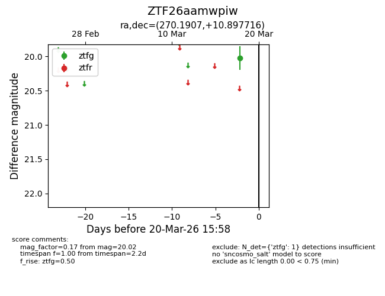
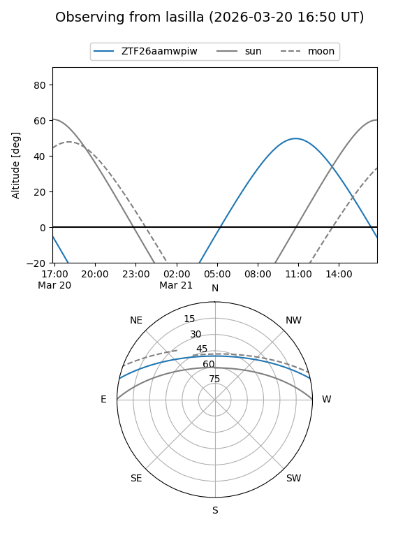
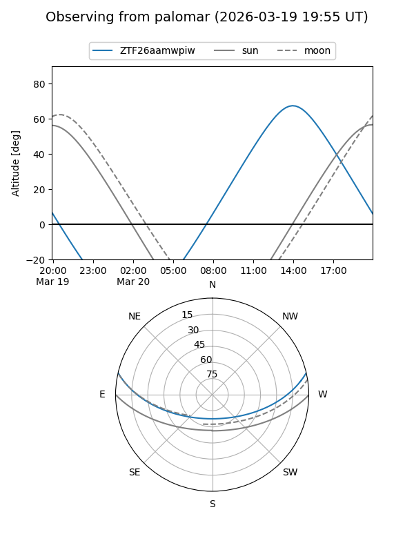

ZTF26aamwpiw
Target ZTF26aamwpiw at 2026-03-20 15:59
Aliases and brokers:
FINK: link
Lasair: link
ALeRCE: link
alt names
ZTF26aamwpiw (ztf,fink_ztf)
Coordinates:
equatorial (ra, dec) = 270.1907,+10.89772
equatorial (HMS+DMS) = 18:00:45.77,+10:53:51.78
galactic (l, b) = (37.1142,+16.13336)
Flags:
Photometry:
last ztfg=20.02
1 ztfg detections
Lightcurve

Visibility


Additional plots